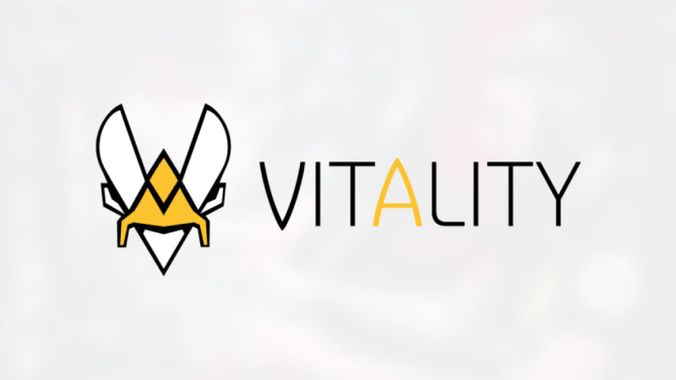
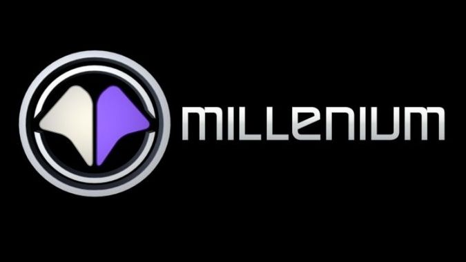
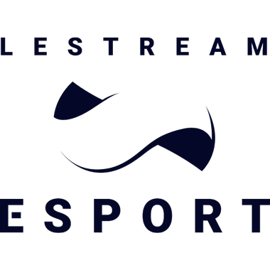

Vitality (présente dans au moins 10 jeux)
La strucutre française Vitality a été fondée en 2013 et est maintenant le plus important représentant français sur la scène E-sport internationale. Elle est considérée comme l'une des trois plus puissantes structures d'Europe. Elle possèdes des équipes dans au moins 10 jeux comme CS GO, Rainbow Six Siege, Rocket League ou encore FIFA....
Solary (présente dans au moins 8 jeux)
La structure française Solary possède des équipes dans 8 jeux : Fortnite, League of Legends, Hearthstone, Rocket League, TrackMania, SUper Smash Bros. Ultimate ou encore Teamfight Tactics.
Millenium
Millenium est une association dédiée au E-sport qui a vu le jour en 2006. Elle performe aujourd'hui dans des jeux comme League of Legends, Rainbow Six Siege, Call of Duty, FIFA et Hearthstone.
LeStream
L'équipe LeStream est tout d'abord une Web TV française qui a été fondée par Squeezie et Cyprien, les deux plus gros youtubeurs de France. Cette Web TV diffuse du contenu E-sport et possède ses propres équipes qui évoluent dans les jeux Fortnite et Super Smash Bros. Ultimate. Elle a fait de très beaux résultats notamment à la coupe du monde Fortnite où deux joueurs on finit dans le top 10.
